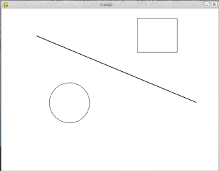
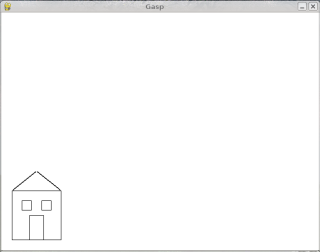

4.1 The modulus operator
The modulus operator works on integers (and integer
expressions) and yields the remainder when the first operand is divided by the
second. In Python, the modulus operator is a percent sign (%).
The syntax is the same as for other operators:
>>> quotient = 7 / 3 >>> print quotient 2 >>> remainder = 7 % 3 >>> print remainder 1
So 7 divided by 3 is 2 with 1 left over.
The modulus operator turns out to be surprisingly useful. For example, you
can check whether one number is divisible by another---if x % y is
zero, then x is divisible by y.
Also, you can extract the right-most digit or digits from a number. For
example, x % 10 yields the right-most digit of x (in
base 10). Similarly x % 100 yields the last two digits.
4.2 Boolean values and expressions
The Python type for storing true and false values is called
bool, named after the British mathematician, George Boole.
George Boole created Boolean algebra, which is the basis of all modern
computer arithmetic.
There are only two boolean values: True and
False. Capitalization is important, since true
and false are not boolean values.
>>> type(True) <type 'bool'> >>> type(true) Traceback (most recent call last): File "<stdin>", line 1, in <module> NameError: name 'true' is not defined
A boolean expression is an expression that evaluates to a
boolean value. The operator == compares two values and produces
a boolean value:
>>> 5 == 5 True >>> 5 == 6 False
In the first statement, the two operands are equal, so the expression
evaluates to True; in the second statement, 5 is not equal to 6,
so we get False.
The == operator is one of the
comparison operators; the others are:
x != y # x is not equal to y x > y # x is greater than y x < y # x is less than y x >= y # x is greater than or equal to y x <= y # x is less than or equal to y
Although these operations are probably familiar to you, the Python symbols
are different from the mathematical symbols. A common error is to use a single
equal sign (=) instead of a double equal sign (==).
Remember that = is an assignment operator and == is a
comparison operator. Also, there is no such thing as =< or
=>.
4.3 Logical operators
There are three logical operators: and,
or, and not. The semantics (meaning) of these
operators is similar to their meaning in English. For example, x > 0
and x < 10 is true only if x is greater than 0
and less than 10.
n % 2 == 0 or n % 3 == 0 is true if either of the
conditions is true, that is, if the number is divisible by 2 or 3.
Finally, the not operator negates a boolean expression, so
not(x > y) is true if (x > y) is false,
that is, if x is less than or equal to y.
4.4 Conditional execution
In order to write useful programs, we almost always need the ability to
check conditions and change the behavior of the program accordingly.
Conditional statements give us this ability. The simplest
form is the if statement:
if x > 0: print "x is positive"
The boolean expression after the if statement is
called the condition. If it is true, then the indented
statement gets executed. If not, nothing happens.
The syntax for an if statement looks like this:
if BOOLEAN EXPRESSION: STATEMENTS
As with the function definition from last chapter and other compound
statements, the if statement consists of a header and a
body. The header begins with the keyword if followed by
a boolean expression and ends with a colon (:).
The indented statements that follow are called a block. The first unindented statement marks the end of the block. A statement block inside a compound statement is called the body of the statement.
Each of the statements inside the body are executed in order if the boolean
expression evaluates to True. The entire block is skipped if the
boolean expression evaluates to False.
There is no limit on the number of statements that can appear in the body of
an if statement, but there has to be at least one. Occasionally,
it is useful to have a body with no statements (usually as a place keeper for
code you haven't written yet). In that case, you can use the pass
statement, which does nothing.
if True: # This is always true pass # so this is always executed, but it does nothing
4.5 Alternative execution
A second form of the if statement is alternative execution,
in which there are two possibilities and the condition determines which one
gets executed. The syntax looks like this:
if x % 2 == 0: print x, "is even" else: print x, "is odd"
If the remainder when x is divided by 2 is 0, then we know that
x is even, and the program displays a message to that effect. If
the condition is false, the second set of statements is executed. Since the
condition must be true or false, exactly one of the alternatives will be
executed. The alternatives are called branches, because they
are branches in the flow of execution.
As an aside, if you need to check the parity (evenness or oddness) of
numbers often, you might wrap
this code in a function:
def print_parity(x): if x % 2 == 0: print x, "is even" else: print x, "is odd"
For any value of x, print_parity displays an
appropriate message. When you call it, you can provide any integer expression
as an argument.
>>> print_parity(17) 17 is odd. >>> y = 41 >>> print_parity(y+1) 42 is even.
4.6 Chained conditionals
Sometimes there are more than two possibilities and we need more than two branches. One way to express a computation like that is a chained conditional:
if x < y: print x, "is less than", y elif x > y: print x, "is greater than", y else: print x, "and", y, "are equal"
elif is an abbreviation of else if
. Again, exactly one
branch will be executed. There is no limit of the number of elif
statements but only a single (and optional) else statement is
allowed and it must be the last branch in the statement:
if choice == 'a': function_a() elif choice == 'b': function_b() elif choice == 'c': function_c() else: print "Invalid choice."
Each condition is checked in order. If the first is false, the next is checked, and so on. If one of them is true, the corresponding branch executes, and the statement ends. Even if more than one condition is true, only the first true branch executes.
4.7 Nested conditionals
One conditional can also be nested within another. We could have written the trichotomy example as follows:
if x == y: print x, "and", y, "are equal" else: if x < y: print x, "is less than", y else: print x, "is greater than", y
The outer conditional contains two branches. The first branch contains a
simple output statement. The second branch contains another if
statement, which has two branches of its own. Those two branches are both
output statements, although they could have been conditional statements as
well.
Although the indentation of the statements makes the structure apparent, nested conditionals become difficult to read very quickly. In general, it is a good idea to avoid them when you can.
Logical operators often provide a way to simplify nested conditional statements. For example, we can rewrite the following code using a single conditional:
if 0 < x: if x < 10: print "x is a positive single digit."
The print statement is executed only if we make it past both
the conditionals, so we can use the and operator:
if 0 < x and x < 10:
print "x is a positive single digit."
These kinds of conditions are common, so Python provides an alternative syntax that is similar to mathematical notation:
if 0 < x < 10:
print "x is a positive single digit."
This condition is semantically the same as the compound boolean expression and the nested conditional.
4.8 The return statement
The return statement allows you to terminate the execution of a
function before you reach the end. One reason to use it is if you detect an
error condition:
def print_square_root(x): if x <= 0: print "Positive numbers only, please." return result = x**0.5 print "The square root of x is", result
The function print_square_root has a parameter named
x. The first thing it does is check whether x is
less than or equal to 0, in which case it displays an error message and then
uses return to exit the function. The flow of execution
immediately returns to the caller, and the remaining lines of the function are
not executed.
4.9 Keyboard input
In chapter 2 we were introduced to Python's built-in functions that get
input from the keyboard: raw_input and input.
Now let's look at these again in greater depth.
When either of these functions are called, the program stops and waits for
the user to type something. When the user presses Return or the Enter key, the
program resumes and raw_input returns what the user typed as a
string:
>>> my_input = raw_input() What are you waiting for? >>> print my_input What are you waiting for?
Before calling raw_input, it is a good idea to print a message
telling the user what to input. This message is called a prompt.
We can supply a prompt as an argument to raw_input:
>>> name = raw_input("What...is your name? ")
What...is your name? Arthur, King of the Britons!
>>> print name
Arthur, King of the Britons!
Notice that the prompt is a string, so it must be enclosed in quotation marks.
If we expect the response to be an integer, we can use the
input function which evaluates the response as a Python
expression:
prompt = "What...is the airspeed velocity of an unladen swallow?\n" speed = input(prompt)
If the user types a string of digits, it is converted to an integer and
assigned to speed. Unfortunately, if the user types characters
that do not make up a valid Python expression, the program crashes:
>>> speed = input(prompt) What...is the airspeed velocity of an unladen swallow? What do you mean, an African or a European swallow? ... SyntaxError: invalid syntax
In the last example, if the user had made the response a valid Python expression by putting quotes around it, it would not have given an error:
>>> speed = input(prompt) What...is the airspeed velocity of an unladen swallow? "What do you mean, an African or a European swallow?" >>> speed 'What do you mean, an African or a European swallow?' >>>
To avoid this kind of error, it is a good idea to use raw_input
to get a string and then use conversion commands to convert it to other types.
4.10 Type conversion
Each Python type comes with a built-in command that attemps to convert values
of another type into that type. The int(ARGUMENT) command, for
example, takes any value and converts it to an integer, if possible, or
complains otherwise:
>>> int("32")
32
>>> int("Hello")
ValueError: invalid literal for int() with base 10: 'Hello'
int can also convert floating-point values to integers, but
remember that it truncates the fractional part:
>>> int(-2.3)
-2
>>> int(3.99999)
3
>>> int("42")
42
>>> int(1.0)
1
The float(ARGUMENT) command converts integers and strings to
floating-point numbers:
>>> float(32)
32.0
>>> float("3.14159")
3.14159
>>> float(1)
1.0
It may seem odd that Python distinguishes the integer value 1
from the floating-point value 1.0. They may represent the same
number, but they belong to different types. The reason is that they
are represented differently inside the computer.
The str(ARGUMENT) command converts any argument given to it to
type string:
>>> str(32) '32' >>> str(3.14149) '3.14149' >>> str(True) 'True' >>> str(true) Traceback (most recent call last): File "<stdin>", line 1, in <module> NameError: name 'true' is not defined
str(ARGUMENT) with work with any value and convert it into
a string. As mentioned earlier, True is boolean value;
true is not.
For boolean values, the situation is especially interesting:
>>> bool(1)
True
>>> bool(0)
False
>>> bool("Ni!")
True
>>> bool("")
False
>>> bool(3.14159)
True
>>> bool(0.0)
False
Python assigns boolean values to values of other types. For numerical types like integers and floating-points, zero values are false and non-zero values are true. For strings, empty strings are false and non-empty strings are true.
4.11 Gasp
Gasp (Graphics API for Students of Python) will enable us to write programs involving graphics.
To start gasp, try the following:
>>> from gasp import * >>> begin_graphics() >>> Circle((200, 200), 60) Circle instance at (200, 200) with radius 60 >>> Line((100, 400), (580, 200)) Line instance from (100, 400) to (590, 250) >>> Box((400, 350), 120, 100) Box instance at (400, 350) with width 120 and height 100 >>> end_graphics() >>>
Before the last command, which closes the graphics canvas, you should see a graphics window that looks like this:

We will be using gasp from here on to illustrate (pun intended) computer programming concepts and to add to our fun while learning.
4.12 Glossary
- modulus operator:
- An operator, denoted with a percent sign (
%), that works on integers and yields the remainder when one number is divided by another. - boolean value:
- There are exactly two boolean values:
TrueandFalse. Boolean values result when a boolean expression is evaluated by the Python interepreter. They have typebool. - boolean expression:
- An expression that is either true or false.
- comparison operator:
- One of the operators that compares two
values:
==,!=,>,<,>=, and<=. - logical operator:
- One of the operators that combines boolean expressions:
and,or, andnot. - conditional statement:
- A statement that controls the flow of execution depending on some condition.
- condition:
- The boolean expression in a conditional statement that determines which branch is executed.
- block:
- A group of consecutive statements with the same indentation.
- body:
- The block of statements in a compound statement that follows the header.
- branch:
- One of the possible paths of the flow of execution determined by conditional execution.
- chained conditional:
- A conditional branch with more than two possible flows of execution.
In Python chained conditionals are written with
if ... elif ... elsestatements. - nesting:
- One program structure within another, such as a conditional statement inside a branch of another conditional statement.
- prompt:
- A visual cue that tells the user to input data.
- type conversion:
- An explicit statement that takes a value of one type and computes a corresponding value of another type.
4.13 Exercises
Try to evaluate the following numerical expressions in your head, then use the Python interpreter to check your results:
>>> 5 % 2>>> 9 % 5>>> 15 % 12>>> 12 % 15>>> 6 % 6>>> 0 % 7>>> 7 % 0
What happened with the last example? Why? If you were able to correctly anticipate the computer's response in all but the last one, it is time to move on. If not, take time now to make up examples of your own. Explore the modulus operator until you are confident you understand how it works.
if x < y: print x, "is less than", y elif x > y: print x, "is greater than", y else: print x, "and", y, "are equal"
Wrap this code in a function calledcompare(x, y). Callcomparethree times: one each where the first argument is less than, greater than, and equal to the second argument.To better understand boolean expressions, it is helpful to construct truth tables. Two boolean expressions are logically equivalent if and only if they have the same truth table.
The following Python script prints out the truth table for the any boolean expression in two variables: p and q:
expression = raw_input("Enter a boolean expression in two variables, p and q: ") print " p q %s" % expression length = len( " p q %s" % expression) print length*"=" for p in True, False: for q in True, False: print "%-7s %-7s %-7s" % (p, q, eval(expression))
You will learn how this script works in later chapters. For now, you will use it to learn about boolean expressions. Copy this program to a file named
p_and_q.py, then run it from the command line and give it:p or q, when prompted for a boolean expression. You should get the following output:p q p or q ===================== True True True True False True False True True False False False
Now that we see how it works, let's wrap it in a function to make it easier to use:
def truth_table(expression): print " p q %s" % expression length = len( " p q %s" % expression) print length*"=" for p in True, False: for q in True, False: print "%-7s %-7s %-7s" % (p, q, eval(expression))
We can import it into a Python shell and call
truth_tablewith a string containing our boolean expression in p and q as an argument:>>> from p_and_q import * >>> truth_table("p or q") p q p or q ===================== True True True True False True False True True False False False >>>Use the
truth_tablefunctions with the following boolean expressions, recording the truth table produced each time:- not(p or q)
- p and q
- not(p and q)
- not(p) or not(q)
- not(p) and not(q)
Which of these are logically equivalent?
Enter the following expressions into the Python shell:
True or False True and False not(False) and True True or 7 False or 7 True and 0 False or 8 "happy" and "sad" "happy" or "sad" "" and "sad" "happy" and ""
Analyze these results. What observations can you make about values of different types and logical operators? Can you write these observations in the form of simple rules about
andandorexpressions?if choice == 'a': function_a() elif choice == 'b': function_b() elif choice == 'c': function_c() else: print "Invalid choice."
Wrap this code in a function called
dispatch(choice). Then definefunction_a,function_b, andfunction_cso that they print out a message saying they were called. For example:def function_a(): print "function_a was called..."
Put the four functions (
dispatch,function_a,function_b, andfunction_cinto a script namedch4prob4.py. At the bottom of this script add a call todispatch('b'). Your output should be:function_b was called...
Finally, modify the script so that user can enter 'a', 'b', or 'c'. Test it by importing your script into the Python shell.
Write a function named
is_divisible_by_3that takes a single integer as an argument and prints "This number is divisible by three." if the argument is evenly divisible by 3 and "This number is not divisible by three." otherwise.Now write a similar function named
is_divisible_by_5.Generalize the functions you wrote in the previous exercise into a function named
is_divisible_by_n(x, n)that takes two integer arguments and prints out whether the first is divisible by the second. Save this in a file namedch04e06.py. Import it into a shell and try it out. A sample session might look like this:>>> from ch04e06 import * >>> is_divisible_by_n(20, 4) Yes, 20 is divisible by 4 >>> is_divisible_by_n(21, 8) No, 21 is not divisible by 8
- What will be the output of the following?
if "Ni!": print 'We are the Knights who say, "Ni!"' else: print "Stop it! No more of this!" if 0: print "And now for something completely different..." else: print "What's all this, then?"
Explain what happened and why it happened. - The following gasp script, in a file named
house.py, draws a simple house on a gasp canvas:from gasp import * # import everything from the gasp library begin_graphics() # open the graphics canvas Box((20, 20), 100, 100) # the house Box((55, 20), 30, 50) # the door Box((40, 80), 20, 20) # the left window Box((80, 80), 20, 20) # the right window Line((20, 120), (70, 160)) # the left roof Line((70, 160), (120, 120)) # the right roof pause() # keep the canvas open until a key is pressed end_graphics() # close the canvas (which would happen anyway, # since the script ends here, but it is better # to be explicit).
- Run this script and confirm that you get a window that looks like this:
 - Wrap the house code in a function named
draw_house(). - Run the script now. Do you see a house? Why not?
- Add a call to
draw_house()at the botton of the script so that the house returns to the screen. - Parameterize the function with x and y parameters
-- the header should then become
def draw_house(x, y):, so that you can pass in the location of the house on the canvas. - Use
draw_houseto place five houses on the canvas in different locations.
- Run this script and confirm that you get a window that looks like this: